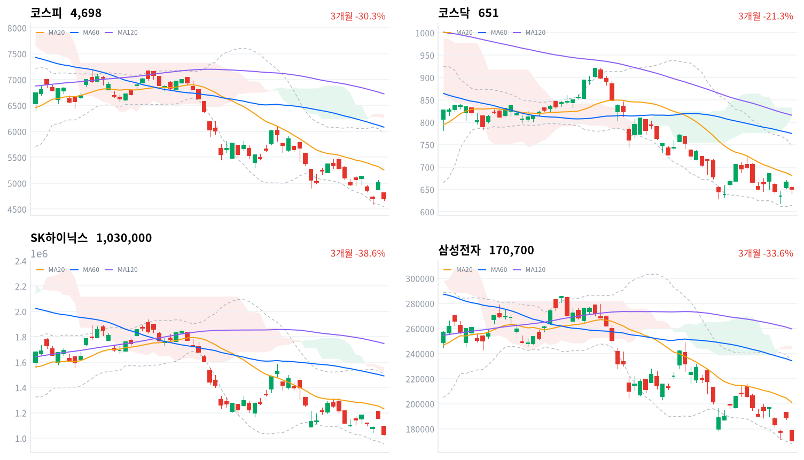

직전 미국 세션에서 마이크론이 11% 넘게 내린 뒤 반도체 대형주가 10% 안팎 빠지면서, 코스피는 전날 반등분을 하루 만에 모두 반납했다. 외국인은 하루 만에 매도로 돌아섰고(당일 잠정), 화장품·제약·항공은 오히려 올랐다.
하락이 반도체와 전자부품에 몰린 만큼 메모리 업황 할인이 다시 붙은 날로 본다. 이 판단은 12월 2일 종가까지 SK하이닉스가 코스피보다 얼마나 약한지로 확인한다.
젠슨 황 복귀로 생긴 반등은 하루를 넘기지 못했고, 매도는 반도체에 몰렸다. 반도체 섹터는 9.27% 내려 SK하이닉스(-11.05%)와 삼성전자(-9.87%)가 지수 하락의 중심에 섰고, 12개 섹터 가운데 9개가 내렸지만 반도체 다음으로 많이 내린 2차전지도 낙폭이 3.58%였다. 외국인은 코스피를 1조8,609억원 순매도해(당일 잠정) 최근 10거래일 가운데 가장 많이 팔았다.
장 마감 뒤 보도는 이날을 「젠슨 황 효과 소멸」과 「AI 버블」 우려가 겹친 시장 전체의 위험 회피로 읽었다. 키움증권 한지영 연구원은 시장이 AI에 대한 기대보다 불안이 우위에 있다고 진단하면서도, 국내 증시가 필라델피아 반도체 지수 약세 여파로 하락 출발한 뒤 과매도 부담에 따른 저가매수로 낙폭을 만회할 것으로 내다봤다. 코스피는 하루 범위의 아래쪽에서 마감해 그 만회는 나오지 않았다. 우리는 이 하락을 시장 전체의 위험 회피보다 메모리 업황 할인이 반도체에 다시 붙은 것으로 읽는다. 직전 미국 세션에서 나스닥은 1.48% 내리는 데 그쳤지만 마이크론은 11.01% 급락했고, 미즈호증권이 글로벌 AI 설비투자 전망을 낮췄다는 보도가 함께 나왔다. 한국에서도 화장품·제약·항공처럼 반도체와 무관한 업종은 올랐다. 메모리 할인을 시장이 얼마로 값매겼는지 보여 줄 옵션 내재변동성이나 이익 전망 수정 자료는 없다.
외국인이 신흥국과 AI 관련 고변동 자산 전반의 위험을 줄였고, 지수 비중과 변동성이 큰 반도체가 그 과정에서 가장 많이 빠졌을 뿐일 수도 있다. 외국인 순매도 규모가 10거래일 가운데 가장 컸고 대만가권(-4.80%)·닛케이(-2.78%)도 함께 내린 점은 이 설명을 받친다. 그래도 반도체를 뺀 섹터의 낙폭이 4% 안쪽에 머물렀고 소비·헬스케어가 오른 점에서 메모리 업황 할인을 우선 설명으로 본다. 시장 일각에서는 BofA가 엔비디아향 HBM 등 고사양 메모리 수요가 여전히 강하다고 봤지만, 메모리 현물가에서 512Gb 웨이퍼 낙폭이 11월 들어 확대되고 있어 연말 고정가 하방 가능성도 거론된다는 의견도 있었다. 업종별 외국인 순매매 자료가 없어 매도가 반도체에 얼마나 몰렸는지는 가리지 못한다. 두 설명은 11월 25일 KRX 종가(SK하이닉스 1,030,000원, 코스피 4,697.51) 대비 12월 2일 KRX 종가 기준 수익률 차에서 확인한다. SK하이닉스가 코스피보다 3%포인트 넘게 약하면 메모리 업황 할인 해석을 뒷받침하고, 3%포인트 넘게 강하면 시장 전반의 위험 축소를 우선 설명으로 보고 이 판단을 철회한다. 그 사이면 어느 쪽으로도 판단하지 않는다.
새로 제안할 상품은 없다. 미국 반도체·AI 하드웨어 테마는 한국·대만 장에서 하루 만에 전날 반등을 되돌려 가격 흐름이 다시 약해졌지만, 하루 급락만으로 메모리 이익 전망이 바뀌었다고 보기는 이르다. 가장 가까운 결정적 일정은 11월 26일 정규장이다. 외국인 순매도가 이어질 때 반도체 밖 업종도 함께 내리는지를 기다린다. 반도체만 다시 약하면 업황 할인 해석을 뒷받침하고, 업종 전반이 함께 빠지면 위험 축소 설명이 더 설득력 있어진다.
코스피가 11월 25일 기준 일목 전환선 5,046 위에서 마감하면 메모리 업황 할인이 반도체에 다시 붙었다는 판단을 철회한다. 하루 만에 이날 낙폭을 다 되찾는다는 뜻이고, 그만한 반등은 지수 비중이 큰 반도체가 먼저 크게 오르지 않고는 나오기 어려워 위험 선호가 돌아오면 반도체가 먼저 반등한다는 설명을 우선 설명으로 본다.
출처: 뉴스핌, 한국경제TV, 이코노미스트, 조선비즈
11월 24일 미국 정규장에서 나스닥은 1.48%, S&P 500은 0.50% 내렸고 다우는 0.85% 올랐다. 지수 낙폭은 작았지만 반도체는 달랐다. 엔비디아가 5.86% 밀리고 필라델피아 반도체지수가 7.88% 급락했다는 보도가 나왔다. 25일 아시아에서는 대만가권(-4.80%)이 가장 많이 내렸고 닛케이(-2.78%), 상해종합(-2.03%), 항셍(-1.14%)이 뒤를 이었다. 코스피 낙폭은 네 지수 평균(-2.69%)보다 3.47%포인트 컸다. 전날 반등이 하드웨어 비중이 큰 대만·한국에서 가장 컸던 것과 같은 모양의 반대다.
코스피는 4,809.00에서 출발해 전날 종가 5,006.03보다 크게 낮게 열었고, 개장 직후 9시 9분 매도 사이드카가 발동됐다. 올해 102번째로 역대 최다라는 보도가 나왔다. 한국 정규장 동안 미국 선물은 ES가 0.55%, NQ가 1.18% 내려 기술주 약세가 아시아 시간에도 이어졌다.
코스피는 4,672.55~4,823.36 범위의 아래쪽 6분의 1 지점인 4,697.51에서 마감해 장중 반등 시도가 시가를 넘지 못했다. 코스닥은 641.08~658.67 범위의 한가운데쯤인 650.64에서 끝났다. 원/달러는 장 초반 고점에서 내려와 원화가 장중 강해지는 쪽이었다.
반도체와 기판·전자부품이 지수를 끌어내렸고, 외국인이 팔고 개인이 받았다. 반대로 화장품·제약·항공·소프트웨어는 올라 지수 안에서 업종 간 성과 차이가 크게 벌어졌다.
출처: 이코노미스트, 조선비즈, 코리아중앙데일리, 아시아투데이
코스피는 6.16% 내린 4,697.51, 코스닥은 2.29% 내린 650.64로 마감했다. 코스피는 반도체 매도로 하루 만에 전날 반등분을 모두 내줬고, 20일 이동평균(5,256)보다 10.63% 아래에 있다. 반도체 비중이 낮은 코스닥의 낙폭은 코스피보다 3.87%포인트 작았다.
| 지수 | 종가 | 등락률 | 시가 | 고가 | 저가 | 전일 종가 |
|---|---|---|---|---|---|---|
| 코스피 | 4,697.51 | -6.16% | 4,809.00 | 4,823.36 | 4,672.55 | 5,006.03 |
| 코스닥 | 650.64 | -2.29% | 654.21 | 658.67 | 641.08 | 665.88 |
| 주체 | 순매수(억원) |
|---|---|
| 개인 | +13,875 |
| 외국인 | -18,609 |
| 기관 | -30 |
| 주체 | 순매수(억원) |
|---|---|
| 개인 | -362 |
| 외국인 | +24 |
| 기관 | +276 |
외국인 매수는 하루로 끝났다. 외국인은 코스피를 1조8,609억원 순매도해(전일 8,130억원 순매수, 당일 잠정) 11월 12일 이후 10거래일 가운데 가장 많이 팔았다. 그 물량은 개인이 받았다. 개인은 1조3,875억원을 순매수했고(전일 2조1,350억원 순매도), 기관은 30억원 순매도로(전일 8,734억원 순매수) 사실상 어느 쪽에도 서지 않았다. 외국인은 11월 1~24일 코스피에서 13조9112억원을 순매도했고 같은 기간 코스피는 12.6% 내렸다는 집계가 보도됐다. 이날 매도는 그 흐름이 하루 쉬었다가 다시 이어진 것으로, 전날 매수 전환만으로 외국인 수급이 돌아섰다고 보기 어렵다는 점을 확인해 준다.
코스닥에서는 외국인(24억원, 전일 1,299억원 순매수)과 기관(276억원, 전일 2,225억원 순매수)이 거의 매매하지 않았고 개인도 362억원 순매도에 그쳤다(전일 3,366억원 순매도). 코스닥이 2.29% 내리는 동안 투자자별 순매수가 이만큼 작았던 것은 외국인 매도가 코스피 대형주에 몰렸다는 뜻이다. 다만 업종별 순매매 자료가 없어 그 매도가 반도체에 얼마나 집중됐는지는 수치로 확인하지 못한다.
장중 누적 수급과 프로그램 매매는 받을 수 있는 자료가 없어 싣지 않는다.
출처: 조선비즈
| 순위 | 종목/ETF | 구분 | 거래대금 | 비고 |
|---|---|---|---|---|
| 1 | SK하이닉스 | 개별주 | 3.84조원 | - |
| 2 | 삼성전자 | 개별주 | 3.55조원 | - |
| 3 | 반도체 테마 ETF | 테마·롱 | 1.33조원 | 27종 합산 |
| 4 | 삼성전자우 | 개별주 | 0.64조원 | - |
| 5 | 삼성전기 | 개별주 | 0.62조원 | - |
| 6 | SK스퀘어 | 개별주 | 0.39조원 | - |
| 7 | KODEX CD금리액티브(합성) | 단기금리·현금성 | 0.38조원 | - |
| 8 | 에이피알 | 개별주 | 0.25조원 | - |
| 9 | 삼성SDI | 개별주 | 0.18조원 | - |
| 10 | 2차전지 테마 ETF | 테마·롱 | 0.18조원 | 14종 합산 |
단위 백만원 원본을 조 단위로 환산했다. 같은 기초자산 ETF는 방향별로, 같은 테마 섹터 ETF는 테마별로 묶고 지수·해외 ETF는 제외했다.
거래는 주가가 10% 안팎 빠진 반도체에 몰렸다. SK하이닉스(3.84조원)와 삼성전자(3.55조원)가 1·2위, 반도체 테마 ETF 27종 합산(1.33조원)이 3위였고, 삼성전자우·삼성전기·SK스퀘어까지 상위 6개가 모두 이날 10% 안팎 내린 반도체·전자부품 쪽이다. 상위 10 가운데 이날 오른 개별주는 화장품의 에이피알(0.25조원) 하나였다. 현금성 상품인 KODEX CD금리액티브(0.38조원)는 3거래일째 상위 10에 들었다. 거래대금은 거래의 양이지 방향이 아니어서, 반도체 ETF 거래가 많았다는 것만으로 그 상품군에 돈이 들어왔는지 빠졌는지는 말할 수 없다.
이날 하락은 반도체 한 섹터에 몰렸다. 반도체가 9.27% 내리는 동안 12개 섹터 가운데 9개가 내렸지만 나머지 낙폭은 2차전지(-3.58%)가 가장 컸고, 헬스케어(+4.21%)·소프트웨어(+2.96%)·방산(+0.53%)은 올랐다. 기간을 늘리면 반도체는 1개월 -25.66%로 가장 많이 내린 섹터이면서 1년 수익률은 +35.03%로 여전히 가장 높아, 이번 할인이 지난 1년의 상승분을 깎아 내는 중이다.
상승 업종 가운데 화장품(+6.07%)은 64종목 가운데 39종목이 올라 업종 전반이 함께 움직였다. 제약(+3.61%)은 174종목 가운데 62종목만 올라 오른 종목이 3분의 1 남짓이었고, 삼성바이오로직스·셀트리온 같은 대형주가 함께 올랐다. 소프트웨어(+9.36%)는 76종목 가운데 36종목이 올랐다. 반도체 업종은 등락률 상위 업종 목록 밖이어서 업종 안에서 몇 종목이 올랐는지 받지 못했다.
반도체는 대형주와 장비주가 함께 10% 안팎 내렸다(SK하이닉스 -11.05%, 삼성전자 -9.87%, 삼성전자우 -10.19%, SK스퀘어 -11.19%, 한미반도체 -9.96%, 이수페타시스 -11.96%, DB하이텍 -7.46%). 직전 미국 세션 마이크론 급락에 더해, 미즈호증권이 2026년부터 2년간 글로벌 AI 설비투자 합산 전망을 3조5000억달러에서 3조2000억달러로 낮췄다는 보도가 메모리 업황 우려로 번졌다.
제약·바이오 대형주는 반대로 올랐다(삼성바이오로직스 +5.66%, 셀트리온 +3.83%, 삼성에피스홀딩스 +11.03%). 제약·바이오 업종지수가 연초 대비 34.9% 내려 악재가 상당 부분 반영됐다는 진단이 보도됐지만, 종목별 개별 재료는 확인되지 않았다.
기판·전자부품은 반도체보다 더 내렸다(삼성전기 -12.00%, 대덕전자 -12.69%, 코리아써키트 -14.97%). 확인된 개별 재료는 없다.
화장품은 중소형주까지 10% 넘게 올랐다(에이피알 +10.82%, 코스맥스 +12.18%, 한국화장품제조 +11.27%, 한국화장품 +6.6%, 아모레퍼시픽 +5.72%). 한중 FTA 후속협상 타결 뒤 한한령 해제 기대와 에이피알의 4분기 실적 기대를 든 보도가 나왔다.
한진칼우는 25.14%, 한진칼은 8.61% 올랐다. 호반그룹과 조원태 회장 측의 지분 경쟁 기대가 이어졌다.
묶음 밖에서는 삼성전자·SK하이닉스 지분을 직간접으로 가진 삼성생명(-10.93%)·SK(-10.45%)·삼성물산(-8.29%)도 크게 내렸고, 두산은 15.16% 내렸지만 확인된 재료는 없다. 전력기기도 함께 내렸다(효성중공업 -8.79%, LS ELECTRIC -6.31%). 하이브는 2.37% 올라 지수와 반대로 움직였다.
출처: 이코노미스트, 한국경제TV, 뉴스핌, 와이드경제, 비즈트리뷴, 뉴스1, 서울경제, 파이낸셜뉴스, 남도일보
주식이 6% 넘게 빠진 날 국고채는 단기와 장기가 같은 폭으로 강했다. 3년물은 5.7bp 내린 3.583%, 10년물은 5.8bp 내린 3.761%였고, 원/달러는 한국장 시간대 마지막 관측이 1,342.00원(15:30)이었다.
| 지표 | 금리 | 전일比(bp) | 기준일 |
|---|---|---|---|
| 국고채 3년 | 3.583% | -5.7 | 2026-11-25 |
| 국고채 10년 | 3.761% | -5.8 | 2026-11-25 |
| CD 91일 | 3.39% | 0.0 | 2026-11-25 |
| 회사채 AA- 3년 | 4.266% | -5.2 | 2026-11-25 |
| 한국은행 기준금리 | 3.00% | 0.0 | 2026년 10월 기준 |
금리가 나란히 내려 커브는 거의 움직이지 않았다. 10년물과 3년물의 금리차는 17.8bp로 0.1bp 좁혀졌고, 최근 2년(533거래일) 가운데 좁은 쪽 11% 안에 있다. 3년물과 기준금리의 차는 58.3bp로 최근 2년(533거래일)의 한가운데쯤이다. 금통위 하루 전 3년물이 내린 데는 주가 급락에 따른 안전자산 수요와 인상 기대의 조정이 섞여 있고, 하루 자료로는 둘을 나누지 못한다.
신용 가격은 국고채 강세를 다 따라가지 못했다. 회사채 AA- 3년물이 5.2bp 내리는 동안 국고채 3년물은 5.7bp 내려, 둘의 금리차는 68.3bp로 0.5bp 넓어졌다. 최근 2년(533거래일) 가운데 넓은 쪽 13% 안이어서 기업 자금 조달 비용은 높은 상태 그대로다.
11월 25일 금리: 국고채 10년 3.761%, 3년 3.583%, 회사채 AA- 3년 4.266%, 기준금리 3.00%. (3.761 − 3.583) × 100 = 17.8bp, 변화 −5.8 − (−5.7) = −0.1bp. (4.266 − 3.583) × 100 = 68.3bp, 변화 −5.2 − (−5.7) = +0.5bp. (3.583 − 3.00) × 100 = 58.3bp.
| 미국 참조 지수 | 구분 | 관측 | 등락률 | 업종 내 상승 비율 | 기준일 |
|---|---|---|---|---|---|
| 반도체·AI 하드웨어 | 종목 | SK하이닉스 | -11.05% | – | 11/25 |
| 반도체·AI 하드웨어 | 종목 | 삼성전자 | -9.87% | – | 11/25 |
| 반도체·AI 하드웨어 | 지수 | 대만가권 | -4.80% | – | 11/25 |
| 전력망 | 종목 | HD현대일렉트릭 | -4.25% | – | 11/25 |
| 전력망 | 종목 | LS ELECTRIC | -6.31% | – | 11/25 |
| 전력망 | 종목 | 효성중공업 | -8.79% | – | 11/25 |
| 방산 | 업종 | 우주항공과국방 | -0.55% | 14% | 11/25 |
| 방산 | 종목 | 한화에어로스페이스 | +0.80% | – | 11/25 |
| 방산 | 종목 | LIG디펜스앤에어로스페이스 | +5.74% | – | 11/25 |
| 산업재 | 종목 | HD현대중공업 | -2.79% | – | 11/25 |
| 산업재 | 종목 | 한화오션 | -1.74% | – | 11/25 |
| 산업재 | 종목 | 삼성중공업 | -5.41% | – | 11/25 |
| 금속·광업 | 업종 | 철강 | -1.83% | 18% | 11/25 |
| 금속·광업 | 업종 | 비철금속 | -0.25% | 20% | 11/25 |
| 금속·광업 | 종목 | POSCO홀딩스 | -1.57% | – | 11/25 |
| 금융 | 업종 | 은행 | -1.27% | 18% | 11/25 |
| 금융 | 업종 | 증권 | -2.08% | 10% | 11/25 |
| 금융 | 종목 | KB금융 | -2.18% | – | 11/25 |
| 금융 | 종목 | 신한지주 | -1.73% | – | 11/25 |
| 소프트웨어 | 업종 | 소프트웨어 | +9.36% | 47% | 11/25 |
| 소프트웨어 | 업종 | IT서비스 | +0.70% | 37% | 11/25 |
| 소프트웨어 | 종목 | NAVER | +1.86% | – | 11/25 |
| 일본 | 지수 | 닛케이 | -2.78% | – | 11/25 |
| 중국 | 지수 | 항셍 | -1.14% | – | 11/25 |
| 중국 | 지수 | 상해종합 | -2.03% | – | 11/25 |
외국인이 코스피를 크게 판 날에도 원/달러는 개장 고점 1,348.68원(09:00)에서 내려와 1,342.00원(15:30)으로 장중 저점 근처에서 끝났다. 반도체 수출업체의 달러 매도가 상승을 막았다는 보도가 나왔고, 해외주식을 원화로 환산하는 쪽에서는 주식 급락이 원화 약세로 번지지 않은 하루였다. 현금 참고 금리인 CD 91일은 변하지 않아 대기 자금의 기대 수익은 그대로다.
반도체·AI 하드웨어는 미국 반도체지수 급락을 아시아 장이 그대로 이어받았다. SK하이닉스(-11.05%)·삼성전자(-9.87%)와 함께 대만가권(-4.80%)이 아시아에서 가장 많이 내려, 하드웨어 비중이 큰 시장일수록 낙폭이 컸다. 이 움직임은 직전 미국장의 반응을 이어받은 것이어서 미국 반도체의 다음 방향을 미리 보여 주는 것은 아니다. 전력망은 수요 쪽 새 자료 없이 AI 하드웨어와 함께 내렸다(효성중공업 -8.79%, LS ELECTRIC -6.31%, HD현대일렉트릭 -4.25%). 한국 장에서 전력기기가 여전히 AI 인프라 관련주로 함께 거래된다는 뜻이어서, 미국 전력망 투자 테마도 반도체 매도의 영향을 받을 수 있다.
출처: 뉴스1
지수가 6% 넘게 빠진 날 증권시장안정펀드를 키우는 작업이 시작됐다. 매일경제에 따르면 금융위원회는 산업은행 등 기존 출자사에 추가 출자 가능성을 묻는 공문을 보내 준비에 나섰고, 박현주 미래에셋그룹 회장은 증안펀드를 최소 100조원 규모로 확대하자고 제안했다. 2020년 조성돼 2022년 재약정된 증안펀드의 출자 약정액은 10조7600억원이다. 펀드가 집행되면 지수 대형주를 사들이는 수요가 생겨, 외국인 매도를 개인이 홀로 받아 내는 이날 같은 구조에서 매수 주체가 하나 늘어난다. 규모가 약정액 수준에 머물면 하루 외국인 순매도 몇 번에 그치는 크기여서 효과는 제한적이다. 규모와 집행 시점은 발표되지 않았다(일정 미확정).
한국은행은 11월 26일 기준금리(3.00%, 10월 동결)를 결정하고 수정 경제전망을 낸다. 추가 인상 여지를 짚는 보도가 있었고, 증권가 전망은 인상과 동결로 엇갈린다. 인상되면 은행은 순이자마진에 유리하고 건설·부동산은 조달비용 부담이 커진다. 이날 3년물 하락이 인상 기대의 후퇴였다면 동결 시 금리가 더 내려가고, 위험 회피 수요였다면 결정 뒤에도 주가에 따라 움직인다. 결정과 소수의견, 성장률 전망 수정이 이를 가른다.
미국이 한국을 포함한 16개국을 상대로 3월 착수한 301조 과잉생산 조사 결과를 이르면 이번 주 발표한다는 보도가 나왔다. 7월 강제노동 301조 관세는 한국에 12.5%로 확정됐고 반도체 등 232조 품목은 빠졌다. 관세가 붙으면 철강·자동차·배터리·조선 같은 조사 대상 제조업의 수출 마진이 줄어든다. 반도체가 포함되는지는 정해지지 않았다. 이날 자동차(-1.82%)와 철강(-1.83%)은 시장보다 덜 내려 관세 우려가 가격에 따로 드러나지는 않았다. 발표 날짜는 정해지지 않았다.
국제금융센터 집계로 11월 24일부터 연말까지 외국인 배당은 23조4000억원이고, 삼성전자 배당 지급일인 11월 27일 외국인 배당은 15조8000억원이라는 보도가 나왔다. 블룸버그를 인용해 삼성전자 외국인 배당에 따른 원화 단기 약세 압력도 거론된다는 시각도 나왔다. 외국인이 배당금을 달러로 바꿔 송금하면 원/달러에 상승 압력이 생겨, 수출주의 환산 이익에는 유리하고 수입 원가가 큰 업종에는 부담이다. 이날은 원화가 오히려 강해졌으므로 11월 27일 지급일 전후 원/달러가 그 압력을 실제로 보여 주는지 확인한다.
한중 FTA 서비스·투자 후속협상 실질 타결이 이날 화장품 강세의 배경으로 다시 보도됐다. 중국 매출과 관광객이 늘면 화장품·면세·여행·엔터의 이익 전망이 올라가지만, 중국 당국의 한국 공연·콘텐츠 승인 공지는 아직 없다. 화장품은 업종 전반이 올랐고 하이브도 지수와 반대로 올라 기대가 이어졌다. 공지가 나오는지가 다음 분기점이다(일정 미확정).
호반그룹 지분이 20.69%, 조원태 회장 측이 20.58%로 맞선 가운데 조 회장 측이 보통주 32만5천주 매입 계약을 맺었다는 보도가 나왔다. 경영권 경쟁은 의결권이 있는 보통주에 매수 수요를 만들지만, 의결권 없는 우선주까지 급등해 매수 경쟁이 멈추면 프리미엄이 빠르게 꺼질 수 있다는 증권가 경고가 나왔다. 분수령은 내년 3월 정기주총이다.
출처: 비즈워치, 한국경제TV, 뉴시스, 이데일리, 뉴스1, 서울경제, 파이낸셜뉴스, 남도일보, 재경일보
11월 24일 판단은 유효하다. 코스피는 4,697.51로 마감해 11월 24일 기준 일목 전환선 5,046 위로 올라서지 못했으므로, 11월 24일 반등을 미국 AI 반도체 급반등을 하루 늦게 반영한 안도 반등으로 본 판단을 미리 정한 조건대로 유지한다. 기다린 조건인 외국인 순매수 지속은 충족되지 않았다. 외국인은 1조8,609억원을 순매도해(당일 잠정) 하루 만에 매도로 돌아섰다. 사전에 정한 기간 검증인 12월 1일 종가 기준 코스피 수익률(11월 24일 종가 5,006.03 대비 ±3%)은 이날 중간값이 -6.16%로 하루 안도 반등 쪽 기준을 넘어 있지만, 판정은 12월 1일 종가로 한다. 전날 판단은 반등의 성격만 말했고 무엇이 다시 하락을 부를지는 정하지 않았다. 이날 하락이 반도체에 몰린 만큼 그 원인을 새 판단으로 세웠다.
| 판단(세운 날) | 오늘 결과 | 상태 |
|---|---|---|
| 반도체 급락은 메모리 업황 할인 재개(11월 25일) | SK하이닉스 -11.05%, 코스피 -6.16% | 새로 세움 — 12월 2일 종가 |
| 코스피 반등은 하루 안도 반등(11월 24일) | 11월 24일 대비 코스피 -6.16% | 판단 보류 — 12월 1일 종가 |
| 삼성전기 급등은 고객 확인 이익 재평가(11월 18일) | 삼성전기−코스피 +0.51%포인트 | 판단 보류 — 11월 25일 종가로 종료 |
| 한한령 수혜주 급등은 하루 기대 매수(11월 19일) | 하이브 +2.37%, 화장품 업종 +6.07% | 판단 보류 — 11월 26일 종가 |
| 삼성전자 약세는 중국 출하 이익 경로(11월 20일) | 삼성전자−SK하이닉스 +0.69%포인트 | 판단 보류 — 11월 27일 종가 |
| 건설주 급락은 데이터센터 할인(11월 23일) | 현대건설 종가 미수집, 건설 섹터 -1.91% | 판단 보류 — 11월 30일 종가 |
메모리 업황 할인 판단(11월 25일)은 오늘 세웠다. 11월 25일 KRX 종가(SK하이닉스 1,030,000원, 코스피 4,697.51) 대비 12월 2일 KRX 종가 기준 SK하이닉스 수익률이 코스피 수익률보다 3%포인트 넘게 낮으면 메모리 업황 할인 해석을 뒷받침하고, 3%포인트 넘게 높으면 시장 전반 위험 축소를 우선 설명으로 보고 철회한다. 차이가 ±3%포인트 안이면 어느 쪽으로도 판단하지 않고 닫는다. SK하이닉스는 지수 비중과 변동성이 커 지수 방향에 따라 차이가 커질 수 있으므로, 그사이 외국인 순매수 방향과 메모리 가격·마이크론 관련 새 자료를 함께 적어 둔다.
삼성전기 판단(11월 18일)은 기준 안에 들어 어느 쪽으로도 판단하지 않고 닫는다. 삼성전기는 11월 18일 810,000원에서 755,000원으로 6.79% 내려 같은 기간 7.30% 내린 코스피와의 차가 +0.51%포인트였다. 전날까지 +7.14%포인트였던 우위가 판정일 하루 12.00% 급락으로 거의 사라졌고, 그 하락은 반도체·전자부품 전반의 급락과 함께였다. 엔비디아 MLCC 협력 확대 보도를 뒤집는 새 자료는 확인되지 않아, 방향도 이유도 가리지 못한 채 끝났다.
한한령 판단(11월 19일)은 하이브가 이날 2.37% 올라 6% 넘게 내린 지수보다 강했으므로, 전날 -6.20%포인트였던 수익률 차가 크게 좁혀졌다. 판정은 11월 26일 종가로 한다. 삼성전자 중국 출하 판단(11월 20일)은 삼성전자 -6.77%, SK하이닉스 -7.46%로 차가 기준 안이고 출하 허가 보도는 없다. 건설주 판단(11월 23일)은 현대건설 종가가 수집되지 않아 중간값을 계산하지 못했고, 데이터센터 수주 취소·지연 공시는 확인되지 않았다.
수익률 = (11월 25일 종가 ÷ 기준 종가 − 1) × 100. 코스피 5,006.03 → 4,697.51 −6.16%. 삼성전기 810,000원 → 755,000원 −6.79%, 코스피 5,067.44 → 4,697.51 −7.30%, 차 +0.51%포인트. 삼성전자 183,100원 → 170,700원 −6.77%, SK하이닉스 1,113,000원 → 1,030,000원 −7.46%, 차 +0.69%포인트.
| 시점 | 확인할 것 | 가르는 판단 |
|---|---|---|
| 11월 26일 종가 | 하이브−코스피 수익률 차(11월 19일 대비) | 하루 기대 매수인가, 이익 재평가인가 |
| 11월 27일 종가 | 삼성전자−SK하이닉스 수익률 차(11월 20일 대비) | 종목 고유 이익 경로인가, 전반 위험 축소인가 |
| 11월 30일 종가 | 현대건설−코스피 수익률 차(11월 23일 대비) | 데이터센터 할인인가, 하루 위험 축소인가 |
| 12월 1일 종가 | 코스피 수익률(11월 24일 대비 ±3%) | 하루 안도 반등인가, 재평가 시작인가 |
| 12월 2일 종가 | SK하이닉스−코스피 수익률 차(11월 25일 대비 ±3%포인트) | 메모리 업황 할인인가, 시장 전반 위험 축소인가 |
11월 26일 금통위 기준금리 결정, 11월 27일 삼성전자 배당 지급일 원/달러가 금리·환율 해석을 바꾼다. 미국 301조 과잉생산 조사 결과, 증권시장안정펀드 확대 규모, 중국 당국의 한국 콘텐츠 승인 공지, 삼성전자 중국 출하 허가는 일정 미확정이다.

3개월 일봉에 이동평균(20·60·120일)·볼린저밴드·일목 구름대를 겹쳤다. 상승은 녹색, 하락은 적색이다.
| 자산 | 위치(이평·구름) | 가까운 저항 | 가까운 지지 |
|---|---|---|---|
| 코스피 | 전환선 아래, 세 이동평균·구름 아래(역배열) | 전환선 5,046 | 20일 저점 4,587 → 볼린저 하단 4,549 |
| 코스닥 | 전환선 아래, 세 이동평균·구름 아래(역배열) | 전환선 672 → 20일선 681 | 20일 저점 619 → 볼린저 하단 615 |
| SK하이닉스 | 전환선 아래, 세 이동평균·구름 아래(역배열) | 없음(10% 안) | 20일 저점 102만7천원 → 볼린저 하단 95만6천원 |
| 삼성전자 | 전환선 아래, 세 이동평균·구름 아래(역배열) | 없음(10% 안) | 20일 저점 17만원 → 볼린저 하단 16만8천원 |
코스피는 세 이동평균과 구름 아래의 역배열에서 11월 25일 기준 전환선 5,046보다 7% 넘게 낮은 자리로 다시 내려왔다. 위로는 그 전환선이 10% 안의 유일한 저항이고, 아래로는 20일 저점 4,587과 볼린저 하단 4,549가 2~3% 거리에 있어 지지까지 여유가 저항까지보다 훨씬 짧다.
SK하이닉스와 삼성전자는 20일 저점과 거의 같은 자리에서 마감했고, 둘 다 전환선이 종가보다 10% 넘게 위에 있어 가까운 저항이 없다.
위 레벨은 이동평균·볼린저밴드·일목균형표와 스윙 고저를 11월 25일 종가로 기계적으로 계산한 값이며 투자 권유가 아니다. 종가에서 10% 넘게 떨어진 레벨은 싣지 않았다.